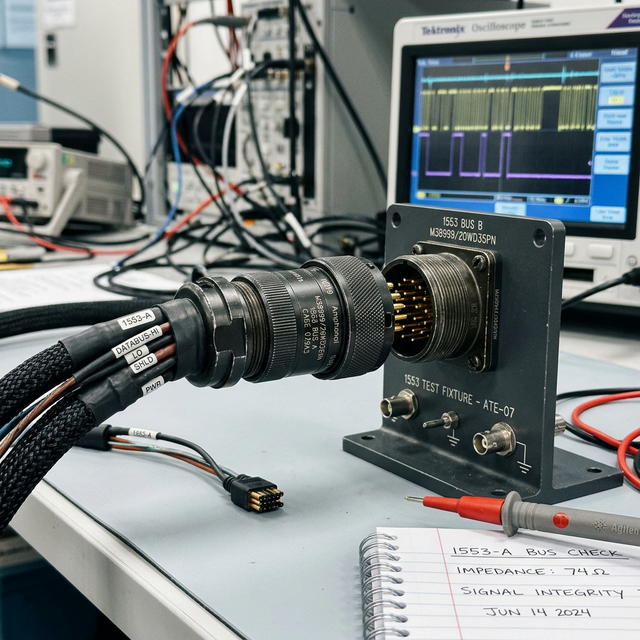

MIL-STD-1553 basics
Module Objectives
- Contrast the fundamentally unidirectional architecture of ARINC 429 with the bidirectional architecture of MIL-STD-1553.
- Define the dictatorial role of the Bus Controller (BC) in a 1553 network.
- Explain the addressing concept of Remote Terminals (RTs).
Why Does This Matter?

Your civilian avionics shop receives a contracted military transport helicopter for an overhaul. A technician casually connects a standard ARINC 429 analyzer to the main databus and receives absolute garbage. That is because this airframe utilizes MIL-STD-1553 — a fundamentally, radically different bus architecture featuring a dictatorial central Bus Controller, high-speed bidirectional communication, and a strict command-response requirement. If you attempt to troubleshoot a 1553 system using ARINC 429 logic, you will be entirely lost.
What You Need To Know
ARINC 429 vs. MIL-STD-1553 — The Core Differences
ARINC 429 is a decentralized, one-way broadcast. MIL-STD-1553 is a highly centralized, two-way military network.
| Architectural Feature | ARINC 429 (Civilian) | MIL-STD-1553 (Military/Advanced) |
|---|---|---|
| Data Direction | Unidirectional (One-way) | Bidirectional (Two-way on one cable) |
| Network Control | None (Passive Broadcast) | Bus Controller (BC) dictates all traffic |
| Transmission Protocol | Continuous loop broadcasting | Strict Command-Response (Speak only when spoken to) |
| Transmission Speed | 12.5 kbps or 100 kbps | 1 Mbps (Massively faster) |
| Wiring Redundancy | Single bus per direction | Dual-redundant (Bus A and Bus B) for battle damage survival |
The Bus Controller (BC) — The Dictator
In MIL-STD-1553, the Bus Controller (BC) (usually the mission computer) is the absolute master of the network:
- It initiates 100% of all data transfers by issuing specific 'Command Words'.
- No other device on the bus can transmit a single bit of data without being specifically commanded to do so by the BC.
- The BC mathematically schedules the sequence, priority, and millisecond timing of all bus transactions.
- The Critical Flaw: If the specific BC computer hardware fails, all bus communication across the entire aircraft ceases instantly (though most systems employ a backup BC).
Remote Terminals (RTs) — The Subordinates
Remote Terminals are the individual connected devices (radar sensors, targeting displays, weapon computers).
- Every single RT is assigned a unique hardware Address (numbered 0 to 30), usually set by bridging pins on the LRU's backplane connector.
- The BC calls out an RT by its specific address and commands it to either transmit data, receive incoming data, or execute a mode command.
Common MIL-STD-1553 Troubleshooting Matrix
Symptom: A specific device is not responding to the network:
- 1. Check the BC software configuration — Is it programmed to command the correct RT address?
- 2. Check the RT address hardware strapping — Did the installer bridge the correct pins on the connector so the LRU knows its own address? (This is the #1 cause of 1553 faults).
- 3. Check wiring continuity to the main bus trunk.
Symptom: The entire Bus is jammed or stuck:
- A rogue RT hardware failure is causing it to transmit continuously without a valid BC command, jamming the frequency.
- The BC itself has crashed and is failing to release the bus after a transfer.
System Visualization
graph TD
A[Bus Controller BC] -->|1. Command: RT 5, Send Altitude| B[MIL-STD-1553 Shared Bus Cable]
B --> C[Remote Terminal RT 2 Radar]
B --> D[Remote Terminal RT 5 Air Data]
B --> E[Remote Terminal RT 12 Display]
C -.->|Ignores Command - Wrong Address| F[Remains Silent]
E -.->|Ignores Command - Wrong Address| F
D -->|2. Recognizes Address 5| G[RT 5 Transmits Altitude Data back onto Bus]
G --> A[BC Receives Data and routes to Display]
style A fill:#1e40af,stroke:#1e3a8a,stroke-width:2px,color:#fff
style D fill:#166534,stroke:#14532d,stroke-width:2px,color:#fff
On The Job
When troubleshooting a dead MIL-STD-1553 LRU, always verify the RT address pin-strapping on the connector first. A single-digit wiring error (e.g., strapping RT 5 instead of RT 15) causes the BC to ignore the device, making the LRU appear completely dead when it is actually perfectly healthy. Check BC configuration, RT hardware address pins, and trunk wiring before ever condemning the expensive military hardware.
Reference Terms
ARINC 429 vs MIL-STD-1553
ARINC 429: unidirectional (one-way), one transmitter to multiple receivers, no bus controller required. MIL-STD-1553: bidirectional, command-response with a central Bus Controller (BC) that manages all Remote Terminals (RTs) on a redundant dual-bus.
MIL-STD-1553 Bus Controller
The Bus Controller (BC) in a MIL-STD-1553 system is the master controller that initiates and schedules all data transfers by issuing command words to Remote Terminals (RTs); no data transfer occurs without a BC command.
MIL-STD-1553 Protocol
MIL-STD-1553 is a bidirectional, command-response serial data bus where a Bus Controller (BC) commands Remote Terminals (RTs) on a dual-redundant shielded twisted-pair bus at 1 Mbps.
MIL-STD-1553 Device Not Responding — Diagnosis
When a MIL-STD-1553 device does not respond, check three things before replacing hardware: bus controller configuration (is the correct RT address being commanded?), remote terminal address setting (is it set correctly on the device?), and wiring continuity.
MIL-STD-1553 Bus Non-Idle Fault
A MIL-STD-1553 bus stuck in non-idle state (continuously active) is caused by either a remote terminal that is transmitting without receiving a valid command (rogue RT) or a bus controller that fails to release the bus after completing a data transfer.
MIL-STD-1553
A robust military-standard bidirectional, 1 Mbps command-response digital databus requiring a dictator Central Controller and dual-redundant wiring.
Bus Controller (BC)
The definitive master computer that initiates and schedules all data transfers; no device speaks without the BC's command.
Remote Terminal (RT)
A subordinate device on the 1553 bus, mathematically identified by a unique hardware-strapped address (0–30).
Command-Response
The rigid communication protocol where devices (RTs) remain totally silent until specifically commanded to transmit or receive by the BC.
Assessment Check
MIL-STD-1553 is a lightning-fast, bidirectional command-response network driven by a central Bus Controller — the exact opposite of ARINC 429's controllerless broadcast model. Always verify RT addresses before replacing LRUs. --- ---